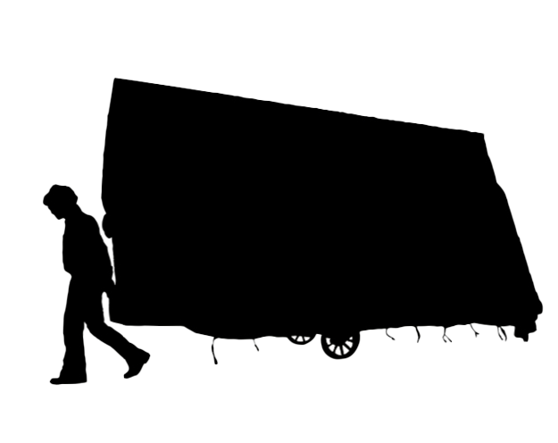

La Fabbrica Illuminata
Integrazione degli Standard TEI e MEI nell'Analisi e Codifica del Testo
Realizzato da grazie al supporto di: Università di Pisa
Edizione digitale a carattere didattico -
aprile 2025
Responsabile di codifica - Giorgia Migliorini
Referente universitario - Angelo Mario Del Grosso
Referente universitario - Cristina Savettieri
Documento con disponibilità di accesso libero (Università di Pisa)

L'attività di codifica, qui documentata nei suoi risultati, ha interessato alcuni
dei testi
redatti dal poeta Giuliano Scabia nel contesto della collaborazione artistica con il compositore
Luigi Nono. Nonostante i primi brani introduttivi (le due lettere), aggiunti in sostegno
dell'apparato critico e teorico situato nei capitoli primo e secondo dell'elaborato
di tesi, i testi
poetici successivi (I mangiatori di nebbia, I morti del Vajont e le stesure della
Fabbrica illuminata)
hanno sollecitato la ricerca di possibilità alternative di codifica.
Fine principale del progetto, infatti, è quello di offrire una codifica il quanto
più attinente possibile
alla natura dei testi, alla loro composizione, per come essa è stata discussa.
Oltre al repertorio TEI (Text Encoding Initiative), infatti, la codifica ha usufruito anche dei moduli e degli elementi
MEI (Music Encoding Initiative) sperimentando una integrazione tra le due. Ciò si è reso necessario al fine di
preservare la natura significante della forma poetica raggiunta dall'autore, nel contesto
della sfumatura
interpretativa proposta in questa dissertazione.
La codifica è stata intrapresa attingengo alla documentazione offerta dalle linee
guida TEI e MEI.
Sono stati consultati anche i documenti concernenti possibili integrazioni tra gli
schemi delle due Iniziative di Codifica
frutto del lavoro del TEI-MUSIC-SIG (TEI's Special Intrest Group in Music).
A partire dalle specifiche grammaticali sperimentate dai membri del TEI-MUSIC-SIG, sono state poi
aggiunte nuove customizzazioni necessarie ad adattare la codifica alla natura e alla
interpretazione dei
testi poetici. In alcuni casi, si è rivelato necessario anche un semplice aggiornamento
della documentazione
consultata dovuto alle modifiche recenti di TEI e di MEI, successivi all'attività più datata sulla loro integrazione.
SULLA SELEZIONE DEI TESTI
La selezione dei testi è funzionale alla comprensione delle interpretazioni critiche
esposte nell'elaborato di tesi
poiché costituiscono un esempio concreto di quanto discusso. La codifica delle due
lettere iniziali consente di mettere in evidenza
il metodo di lavoro artistico di Giuliano Scabia e l'influenza su di esso della personalità di Luigi Nono.
I testi successivi, invece, introducono gradualmente alla codifica della stesura definitiva
della Fabbrica illuminata e alla sua comprensione.
Le tavole fonetiche che costituiscono una sezione della parte corale della V° scena
del Diario italiano determinano la base delle soluzioni formali
addottate per il coro della Fabbrica illuminata e segnano lo sviluppo artistico del poeta.
I mangiatori di nebbia - testo che precede le sei versioni della Fabbrica illuminata nella raccolta Padrone&Servo -
mostra come la crescita di Scabia non fosse circoscritta alla sola attività e collaborazione
con Nono, bensì come essa si relazionasse
anche con altri aspetti e momenti della sua riflessione poetica.
La codifica delle cinque versioni della Fabbrica illuminata precedenti a quella definitiva, invece, è stata aggiunta per ricostruire il percorso
graduale
del testo dal Diario italiano fino alla forma autonoma a cui è giunta, mettendo in
evidenza i punti di continuità e di distanza.
La codifica delle due lettere iniziali ha messo in evidenza eventuali errori ortografici - in prevalenza dovuti alla trascrizione a macchina dei testi manoscritti originali - offrendo delle alternative di marcatura consultabili. Sono state riportate, inoltre, le correzioni aggiunte dagli autori stessi.
I testi in prosa sono stati codificati ricalcando la struttura gerarchica reale, senza
modifiche tipografiche.
Le porzioni testuali sono divise in frasi (distinte da punto) e in paragrafi (distinti
da battute a capo).
I testi poetici sono stati suddivisi per lines groups sulla base delle divisioni
intraprese dall'autore.
Il testo del coro I morti del Vajont è considerato come una poesia, dunque, codificato
secondo le soluzioni adottate per il resto dei testi poetici. Interni agli elementi
l
sono stati inseriti i verse e le syl che costituiscono le
porzioni del verso interessate dalla deflagrazione fonetica.
Interpretazione e scelte di codifica
Il tag term con attributo type è stato utilizzato nel primo testo:
- Per mettere in evidenza i riferimenti alla condizione lavorativa operaia e le espressioni
evocative associate a essa
- Per sottolineare la dialettica tra mittente (Luigi Nono), destinatario principale
(operai) e destinatario secondario (gli intellettuali impegnati)
Nel secondo testo:
- Per evidenziare le locuzioni tecniche provenienti dalla disciplina della psicologia
e, dunque, l'interesse per la descrizione della vita interna del personaggio
- Per identificare la varia natura (sociale, religiosa, economica) delle tappe biografiche
ripercorse dall'autore
nella caratterizzazione della figura
Nei testi poetici:
- Per mettere in evidenza la natura eterogenea del materiale linguistico utilizzato.
Sono stati marcati tecnicismi, temrini specifici
espressioni tratte dalla quitidianità, colloquiali, dialettali o forestierismi che
nella loro totalità possono offrire
un'idea di quella stralingua ricercata dall'autore
- Per sottolineare elementi di interesse nell'analisi contenutistica dei testi (es.
tematiche)
Dal reperorio MEI, integrati all'interno del contesto di struttura TEI:
- section, measure, staff, layer sono stati utilizzati
nel caso dei frammenti di partiture musicali inseriti nel testo poetico, per identificarne
la struttura
- beam è stato utilizzato per sottolineare la presenza di più eventi sonori, sia collegati
da
legature di portamento, sia eseguiti in simultaneo (chord)
- note per segnalare un unico evento sonoro. L'evento può essere occupato anche dalla presenza
di una
sillaba, parola o frazione di parola, codificata sempre come syl e allo stesso tempo come parte del verso contenitore l
- breath è utilizzato per segnalare un momento di pausa visiva e uditiva
- dir è tra gli elementi di marcatura più impiegati nel progetto; esso risulta fondamentale
per
identificare le direttive tecniche inserite dall'autore nel testo al fine di procedere
verso un allargamento scenografico


Le fonti
Luigi Nono
Nuova Musica Nuovo Teatro, Andrea Mancini, La conchiglia di Santiago, 2024, pp. 94-95
La lettura della lettera è avvenuta in occasione dell'esecuzione della Fabbrica illuminata presso l'Italsider di Genova-Cornigliano, organizzata nel 1965 da una delegazione di operai iscritti al partito comunista. In seguito a questo primo incontro, l'opera è stata eseguita in altre fabbriche italiane e all'interno di centri di riunione politico-sociale, creando numerose occasioni di confronto tra il compositore e gli operai.
Giuliano Scabia
La lettera appartiene allo scambio epistolare che Giuliano Scabia e Luigi Nono hanno intrapreso nel 1961 e mantenuto fino al 1966. La lettera è conservata, insieme alle altre, presso l'Archivio Scabia a Firenze. Oltre al messaggio contenuto nel corpo dell'epistola, essa presenta un testo allegato redatto in un momento diverso, precedente a quello della lettera stessa.
Luogo di spedizione: MilanoDestinatario: Luigi Nono
Coro. I vivi e i morti del Vajont
Giuliano Scabia
Luigi Nono
Nuova Musica Nuovo Teatro, Andrea Mancini, La conchiglia di Santiago, 2024, pp. 42-45
Il brano costituisce la prima sezione del coro III, situato nella V scena del Diario italiano, mai concluso. L'attività di codifica ne prende in considerazione la versione trascritta e pubblicata nel volume Nuova Musica Nuovo Teatro.
Giuliano Scabia
Padrone&Servo, Sciascia, Giuliano Scabia, 1965, 56-63
Il testo appare per la prima volta sulla rivista Nuova Corrente e solo in seguito è inserito nella raccolta poetica. La prima versione conteneva anche una sezione B, poi eliminata.
I stesura - Cinque donne. Sogno e incubo
II stesura - Una donna e coro di donne. Sogno e incubo
IV stesura - Una donna e cori di donne e uomini contrapposti
V stesura - A contrasto. Una donna. Coro di donne. Coro di uomini
Padrone e Servo, Sciascia, Giuliano Scabia, 1965, 82-93
La terza stesura non è stata mai aggiunta alla raccolta. Essa è presente, in varie forme mai concluse, all'interno delle lettere che i due autori si scambiavano.
La fabbrica illuminata, per soprano e nastro magnetico a quattro piste (1964), Luca Cossettini, Casa Ricordi, 1967, p. 35
La codifica della stesura definitiva della Fabbrica illuminata prende in considerazione la versione pubblicata da Casa Ricordi all'interno dell'edizione critica del 1967.